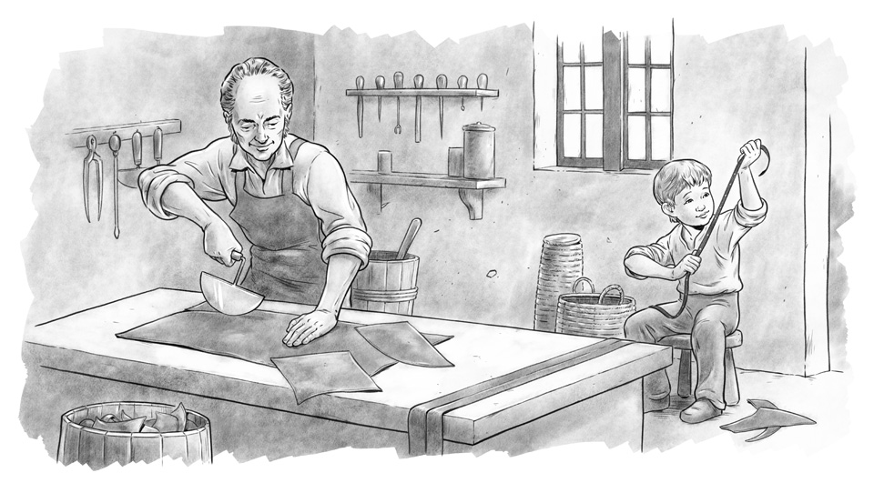

Courage is that firmness that confronts danger. It requires taking risks and seeking the unknown with a sense of responsibility towards oneself and those around them.
Louis Braille was born in France about 200 years ago. His father made leather goods. One day, he hurt his eye while playing with an instrument used for stitching leather. The infection spread to the other eye and he became totally blind. Blind people those days were treated with great cruelty, and their state of blindness was often seen as divine punishment.

Louis’ father sent him to a blind school where he met a retired soldier who taught him to read with the help of embossed dots. Braille started refining the script for the blind so that they could read by feeling with their fingers. By the age of twenty, Braille had conceived and published a book explaining how his system could be used by the blind for reading and writing.
Braille not only overcame his own affliction but also helped blind people all over the world to empower themselves by reading and acquiring knowledge. Braille’s method soon spread across the world. His story is an example of true courage in the face of unfavourable circumstances!
Source: You Can Win by Shiv Khera

Do you want to stand out from the rest in this world?
Edited by Rohn Mathew